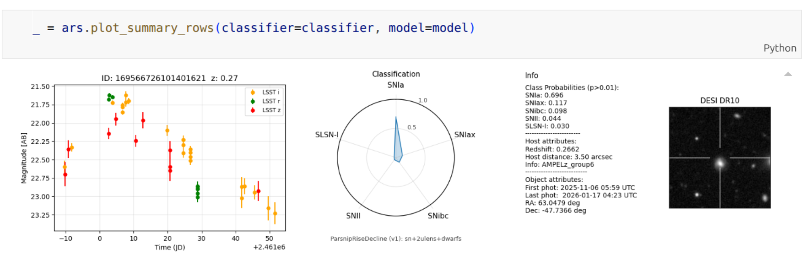

Ampel-Access

Ampel-Access provides tools for subscribing to AMPEL Kafka topics (via Hopskotch) which stream the transient reports of the AMPEL science channels. It is intended for interactive exploration, vetting workflows, and human-in-the-loop review while the full provenance chain of AMPEL is being kept. The transient reports follow the AMPEL structure with a lightweight installation that does not require AMPEL packages.
The up-to-date documentation and installation instructions live in the GitHub repository. This page provides a quick orientation and the relevant links.
Repository & demo notebook
GitHub repository:
https://github.com/AmpelAstro/Ampel-Access
Demo notebook:
demo_AmpelAccess.ipynb
What you can do with Ampel-Access
- Subscribe to streams via Hopskotch and keep an incremental local cache
- Maintain and update sets of transient reports (merge + deduplicate)
- Apply science-driven filters to the active subset
- Visualize light curves, classifications, and compact review tables
- Optional: match LSST candidates to IceCube probability regions
Where to start
If you want the broker and science-channel context, start with: Rubin/LSST Science Streams. If you want hands-on usage and installation, follow the repository README and the demo notebook linked above.